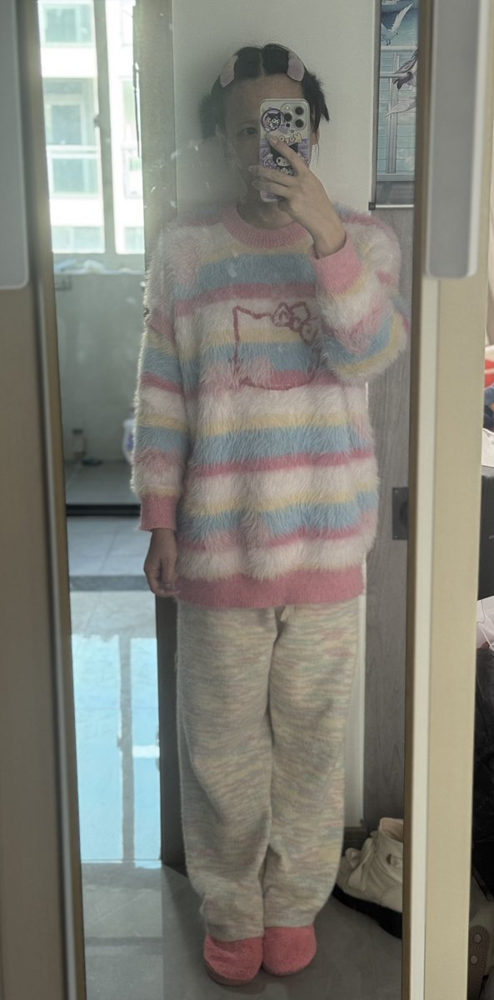
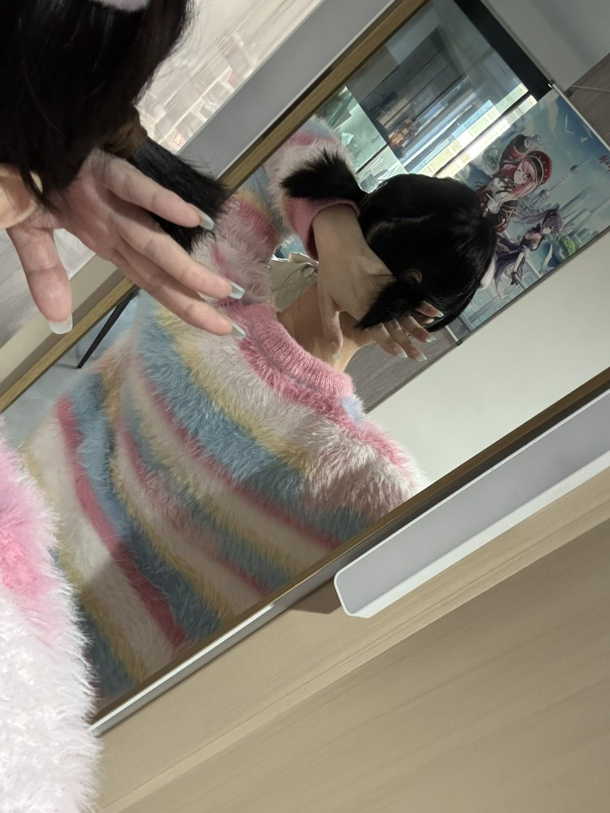

🍀🍥竹蜻蜓🍥🍀
@zqtlovekris99
@nothousand 这衣服好看 我也想要


芊茉音華
@nothousand
我妈又来了 我就这样见我妈
结果 炸柜失败again
给她搞了手机乘公交的乘车码，换了一个新的贴膜
完全没说我外观和美甲的事情。
笑死 让我少买点“洋娃娃”（各种玩偶）说是易经上说的这样不好，被我嘲讽了ww让她少看点dy
最后又说到谈婚论嫁的事情上去被我下逐客令了。 https://t.co/MT5xDHanoB